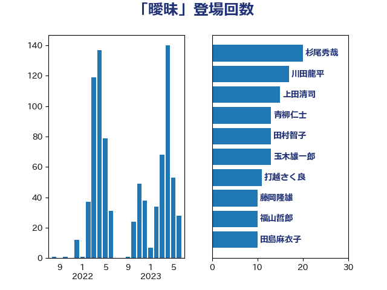

単語「曖昧」

| 杉尾秀哉 | 立憲民主党 | 20 回 |
| 川田龍平 | 立憲民主党 | 17 回 |
| 上田清司 | 国民民主党 | 15 回 |
| 青柳仁士 | 日本維新の会 | 13 回 |
| 田村智子 | 日本共産党 | 13 回 |
| 玉木雄一郎 | 国民民主党 | 13 回 |
| 打越さく良 | 立憲民主党 | 11 回 |
| 藤岡隆雄 | 立憲民主党 | 10 回 |
| 福山哲郎 | 立憲民主党 | 10 回 |
| 田島麻衣子 | 立憲民主党 | 10 回 |
| 柳ヶ瀬裕文 | 日本維新の会 | 10 回 |
| 川合孝典 | 国民民主党 | 10 回 |
| 山田賢司 | 自由民主党 | 10 回 |
| 塩川鉄也 | 日本共産党 | 10 回 |
| 北神圭朗 | 無所属 | 10 回 |
| 山添拓 | 日本共産党 | 9 回 |
| 長友慎治 | 国民民主党 | 8 回 |
| 鎌田さゆり | 立憲民主党 | 8 回 |
| 高橋千鶴子 | 日本共産党 | 7 回 |
| 藤田文武 | 日本維新の会 | 7 回 |
| 沢田良 | 日本維新の会 | 7 回 |
| 岸田文雄 | 自由民主党 | 7 回 |
| 小沼巧 | 立憲民主党 | 7 回 |
| 勝部賢志 | 立憲民主党 | 7 回 |
| 井坂信彦 | 立憲民主党 | 7 回 |
| 赤嶺政賢 | 日本共産党 | 6 回 |
| 石垣のりこ | 立憲民主党 | 6 回 |
| 田村貴昭 | 日本共産党 | 6 回 |
| 梅村聡 | 日本維新の会 | 6 回 |
| 柚木道義 | 立憲民主党 | 6 回 |
| 松沢成文 | 日本維新の会 | 6 回 |
| 山田勝彦 | 立憲民主党 | 6 回 |
| 和田有一朗 | 日本維新の会 | 6 回 |
| 吉田統彦 | 立憲民主党 | 6 回 |
| 馬淵澄夫 | 立憲民主党 | 5 回 |
| 階猛 | 立憲民主党 | 5 回 |
| 石橋通宏 | 立憲民主党 | 5 回 |
| 石井苗子 | 日本維新の会 | 5 回 |
| 新藤義孝 | 自由民主党 | 5 回 |
| 岸真紀子 | 立憲民主党 | 5 回 |
| 小川淳也 | 立憲民主党 | 5 回 |
| 奥野総一郎 | 立憲民主党 | 5 回 |
| 佐藤正久 | 自由民主党 | 5 回 |
| 伊藤岳 | 日本共産党 | 5 回 |
| 井上哲士 | 日本共産党 | 5 回 |
| 金子道仁 | 日本維新の会 | 4 回 |
| 野田聖子 | 自由民主党 | 4 回 |
| 緑川貴士 | 立憲民主党 | 4 回 |
| 笠井亮 | 日本共産党 | 4 回 |
| 穀田恵二 | 日本共産党 | 4 回 |
| 福島伸享 | 無所属 | 4 回 |
| 林芳正 | 自由民主党 | 4 回 |
| 本庄知史 | 立憲民主党 | 4 回 |
| 岩渕友 | 日本共産党 | 4 回 |
| 岡田克也 | 立憲民主党 | 4 回 |
| 小熊慎司 | 立憲民主党 | 4 回 |
| 鬼木誠 | 立憲民主党 | 3 回 |
| 馬場雄基 | 立憲民主党 | 3 回 |
| 音喜多駿 | 日本維新の会 | 3 回 |
| 阿部司 | 日本維新の会 | 3 回 |
| 長妻昭 | 立憲民主党 | 3 回 |
| 鈴木宗男 | 日本維新の会 | 3 回 |
| 重徳和彦 | 立憲民主党 | 3 回 |
| 道下大樹 | 立憲民主党 | 3 回 |
| 足立康史 | 日本維新の会 | 3 回 |
| 福島みずほ | 社会民主党 | 3 回 |
| 田村まみ | 国民民主党 | 3 回 |
| 田中健 | 国民民主党 | 3 回 |
| 渡辺周 | 立憲民主党 | 3 回 |
| 清水貴之 | 日本維新の会 | 3 回 |
| 浦野靖人 | 日本維新の会 | 3 回 |
| 浅野哲 | 国民民主党 | 3 回 |
| 水野素子 | 立憲民主党 | 3 回 |
| 横沢高徳 | 立憲民主党 | 3 回 |
| 榛葉賀津也 | 国民民主党 | 3 回 |
| 柴田巧 | 日本維新の会 | 3 回 |
| 末次精一 | 立憲民主党 | 3 回 |
| 早稲田ゆき | 立憲民主党 | 3 回 |
| 斎藤アレックス | 国民民主党 | 3 回 |
| 後藤祐一 | 立憲民主党 | 3 回 |
| 岩谷良平 | 日本維新の会 | 3 回 |
| 山谷えり子 | 自由民主党 | 3 回 |
| 小山展弘 | 立憲民主党 | 3 回 |
| 宮本岳志 | 日本共産党 | 3 回 |
| 大石あきこ | れいわ新選組 | 3 回 |
| 塩村あやか | 立憲民主党 | 3 回 |
| 堀場幸子 | 日本維新の会 | 3 回 |
| 古賀千景 | 立憲民主党 | 3 回 |
| 古川禎久 | 自由民主党 | 3 回 |
| 仁比聡平 | 日本共産党 | 3 回 |
| たがや亮 | れいわ新選組 | 3 回 |
| 齊藤健一郎 | 無所属 | 2 回 |
| 須藤元気 | 無所属 | 2 回 |
| 青山大人 | 立憲民主党 | 2 回 |
| 鈴木庸介 | 立憲民主党 | 2 回 |
| 鈴木俊一 | 自由民主党 | 2 回 |
| 遠藤良太 | 日本維新の会 | 2 回 |
| 進藤金日子 | 自由民主党 | 2 回 |
| 辻元清美 | 立憲民主党 | 2 回 |
| 舟山康江 | 国民民主党 | 2 回 |
| 美延映夫 | 日本維新の会 | 2 回 |
| 米山隆一 | 立憲民主党 | 2 回 |
| 篠原豪 | 立憲民主党 | 2 回 |
| 竹詰仁 | 国民民主党 | 2 回 |
| 神津たけし | 立憲民主党 | 2 回 |
| 礒崎哲史 | 国民民主党 | 2 回 |
| 田名部匡代 | 立憲民主党 | 2 回 |
| 玄葉光一郎 | 立憲民主党 | 2 回 |
| 牧山ひろえ | 立憲民主党 | 2 回 |
| 浜口誠 | 国民民主党 | 2 回 |
| 河西宏一 | 公明党 | 2 回 |
| 池下卓 | 日本維新の会 | 2 回 |
| 水岡俊一 | 立憲民主党 | 2 回 |
| 櫻井周 | 立憲民主党 | 2 回 |
| 梅谷守 | 立憲民主党 | 2 回 |
| 梅村みずほ | 日本維新の会 | 2 回 |
| 松本尚 | 自由民主党 | 2 回 |
| 本村伸子 | 日本共産党 | 2 回 |
| 末松義規 | 立憲民主党 | 2 回 |
| 市村浩一郎 | 日本維新の会 | 2 回 |
| 岬麻紀 | 日本維新の会 | 2 回 |
| 山本剛正 | 日本維新の会 | 2 回 |
| 山岸一生 | 立憲民主党 | 2 回 |
| 山下芳生 | 日本共産党 | 2 回 |
| 小野寺五典 | 自由民主党 | 2 回 |
| 小林鷹之 | 自由民主党 | 2 回 |
| 天畠大輔 | れいわ新選組 | 2 回 |
| 堤かなめ | 立憲民主党 | 2 回 |
| 城井崇 | 立憲民主党 | 2 回 |
| 國重徹 | 公明党 | 2 回 |
| 吉良州司 | 無所属 | 2 回 |
| 古屋範子 | 公明党 | 2 回 |
| 前川清成 | 日本維新の会 | 2 回 |
| 前原誠司 | 国民民主党 | 2 回 |
| 倉林明子 | 日本共産党 | 2 回 |
| 中島克仁 | 立憲民主党 | 2 回 |
| 中司宏 | 日本維新の会 | 2 回 |
| 世耕弘成 | 自由民主党 | 2 回 |
| 高橋光男 | 公明党 | 1 回 |
| 高木真理 | 立憲民主党 | 1 回 |
| 馬場伸幸 | 日本維新の会 | 1 回 |
| 阿部知子 | 立憲民主党 | 1 回 |
| 長峯誠 | 自由民主党 | 1 回 |
| 鈴木敦 | 国民民主党 | 1 回 |
| 鈴木憲和 | 自由民主党 | 1 回 |
| 金子恵美 | 立憲民主党 | 1 回 |
| 野間健 | 立憲民主党 | 1 回 |
| 近藤和也 | 立憲民主党 | 1 回 |
| 西村康稔 | 自由民主党 | 1 回 |
| 藤巻健太 | 日本維新の会 | 1 回 |
| 蓮舫 | 立憲民主党 | 1 回 |
| 葉梨康弘 | 自由民主党 | 1 回 |
| 若松謙維 | 公明党 | 1 回 |
| 若宮健嗣 | 自由民主党 | 1 回 |
| 芳賀道也 | 国民民主党 | 1 回 |
| 船田元 | 自由民主党 | 1 回 |
| 舩後靖彦 | れいわ新選組 | 1 回 |
| 羽田次郎 | 立憲民主党 | 1 回 |
| 紙智子 | 日本共産党 | 1 回 |
| 笠浩史 | 無所属 | 1 回 |
| 福田昭夫 | 立憲民主党 | 1 回 |
| 石橋林太郎 | 自由民主党 | 1 回 |
| 石川香織 | 立憲民主党 | 1 回 |
| 石川大我 | 立憲民主党 | 1 回 |
| 石川博崇 | 公明党 | 1 回 |
| 畦元将吾 | 自由民主党 | 1 回 |
| 田嶋要 | 立憲民主党 | 1 回 |
| 牧義夫 | 立憲民主党 | 1 回 |
| 牧原秀樹 | 自由民主党 | 1 回 |
| 片山大介 | 日本維新の会 | 1 回 |
| 熊谷裕人 | 立憲民主党 | 1 回 |
| 渡辺創 | 立憲民主党 | 1 回 |
| 浜田聡 | NHK党 | 1 回 |
| 浅田均 | 日本維新の会 | 1 回 |
| 浅川義治 | 日本維新の会 | 1 回 |
| 泉健太 | 立憲民主党 | 1 回 |
| 永井学 | 自由民主党 | 1 回 |
| 櫛渕万里 | れいわ新選組 | 1 回 |
| 横山信一 | 公明党 | 1 回 |
| 枝野幸男 | 立憲民主党 | 1 回 |
| 松野明美 | 日本維新の会 | 1 回 |
| 松川るい | 自由民主党 | 1 回 |
| 松原仁 | 立憲民主党 | 1 回 |
| 村田享子 | 立憲民主党 | 1 回 |
| 杉本和巳 | 日本維新の会 | 1 回 |
| 本田太郎 | 自由民主党 | 1 回 |
| 星北斗 | 自由民主党 | 1 回 |
| 早坂敦 | 日本維新の会 | 1 回 |
| 斎藤嘉隆 | 立憲民主党 | 1 回 |
| 斉藤鉄夫 | 公明党 | 1 回 |
| 志位和夫 | 日本共産党 | 1 回 |
| 徳永エリ | 立憲民主党 | 1 回 |
| 広瀬めぐみ | 自由民主党 | 1 回 |
| 岩屋毅 | 自由民主党 | 1 回 |
| 岡本あき子 | 立憲民主党 | 1 回 |
| 山崎誠 | 立憲民主党 | 1 回 |
| 山崎正恭 | 公明党 | 1 回 |
| 山岡達丸 | 立憲民主党 | 1 回 |
| 山井和則 | 立憲民主党 | 1 回 |
| 小野泰輔 | 日本維新の会 | 1 回 |
| 小西洋之 | 立憲民主党 | 1 回 |
| 小沢雅仁 | 立憲民主党 | 1 回 |
| 小倉將信 | 自由民主党 | 1 回 |
| 寺田静 | 無所属 | 1 回 |
| 守島正 | 日本維新の会 | 1 回 |
| 奥下剛光 | 日本維新の会 | 1 回 |
| 大西健介 | 立憲民主党 | 1 回 |
| 大島敦 | 立憲民主党 | 1 回 |
| 大岡敏孝 | 自由民主党 | 1 回 |
| 大口善徳 | 公明党 | 1 回 |
| 塩田博昭 | 公明党 | 1 回 |
| 土田慎 | 自由民主党 | 1 回 |
| 国光あやの | 自由民主党 | 1 回 |
| 和田政宗 | 自由民主党 | 1 回 |
| 吉良よし子 | 日本共産党 | 1 回 |
| 吉田はるみ | 立憲民主党 | 1 回 |
| 吉川元 | 立憲民主党 | 1 回 |
| 古川康 | 自由民主党 | 1 回 |
| 古川元久 | 国民民主党 | 1 回 |
| 加藤鮎子 | 自由民主党 | 1 回 |
| 加藤勝信 | 自由民主党 | 1 回 |
| 佐藤啓 | 自由民主党 | 1 回 |
| 伴野豊 | 立憲民主党 | 1 回 |
| 伊藤俊輔 | 立憲民主党 | 1 回 |
| 伊東信久 | 日本維新の会 | 1 回 |
| 伊佐進一 | 公明党 | 1 回 |
| 中西健治 | 自由民主党 | 1 回 |
| 中田宏 | 自由民主党 | 1 回 |
| 中条きよし | 日本維新の会 | 1 回 |
| 中川正春 | 立憲民主党 | 1 回 |
| 上野通子 | 自由民主党 | 1 回 |
| 上月良祐 | 自由民主党 | 1 回 |
| 三上えり | 立憲民主党 | 1 回 |
| 一谷勇一郎 | 日本維新の会 | 1 回 |
| こやり隆史 | 自由民主党 | 1 回 |